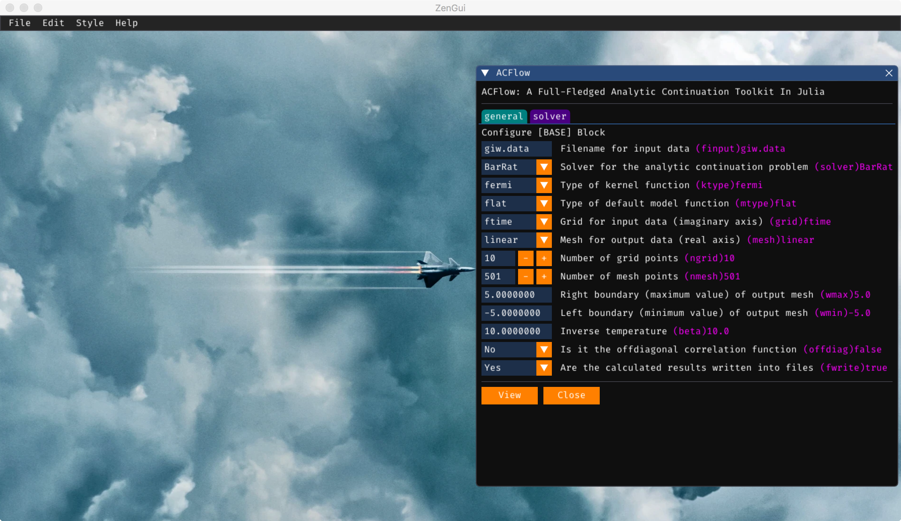
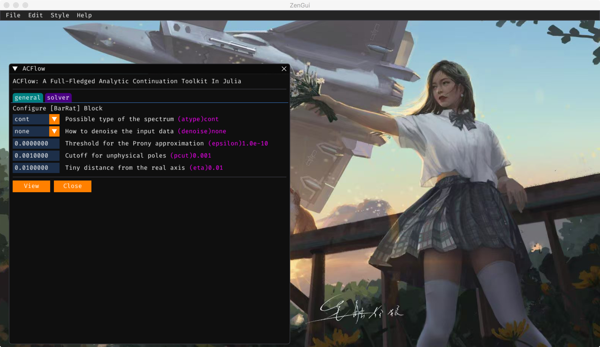

ACGui
ACGui is a web-based graphic user interface for ACFlow. Now it supports the MaxEnt, BarRat, NevanAC, StochAC, StochSK, StochOM and StochPX solvers (in other words, all solvers implemented in the ACFlow package are supported). The users can use ACGui to generate configuration parameters, perform analytic continuation calculations, and visualize calculated results.
ZenGui
ZenGui provides another graphic user interface for ACFlow. It is based on the Dear ImGui C++ library and its Julia language wrapper CImGui.jl. ZenGui is much more effective than ACGui. More important, ZenGui supports the other many-body tools, such as ACTest, Dyson, DFermion, iQIST, and Zen, as well.

Figure 1 | The ACFlow window 1 in the ZenGui app. We should setup the [BASE] Block here.

Figure 2 | The ACFlow window 2 in the ZenGui app. We should setup the analytic continuation solver selected here.